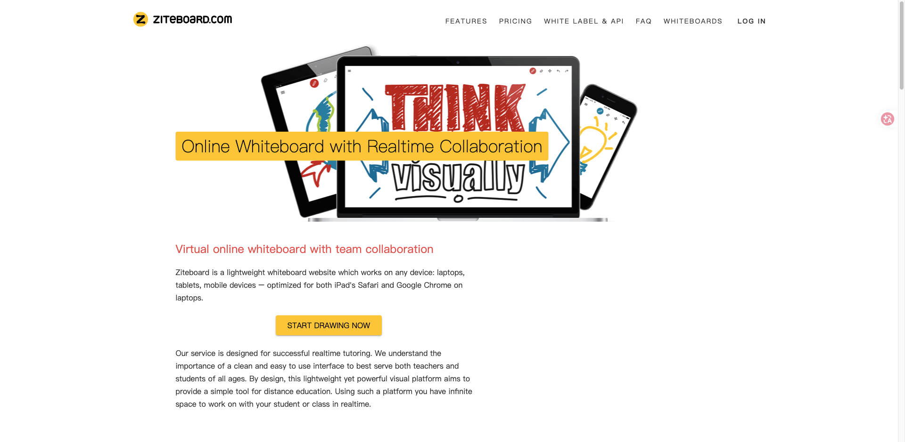

可无限缩放的在线白板，为实时辅导和讲题而做。
一节在线数学辅导：手写公式、手绘函数曲线、PDF 讲义，右侧是缩放控件
Ziteboard 的视觉语言：纯白无限画布上只有细线条 —— 一条手写的积分式、一条手绘抛物线、一张贴在旁边的 PDF。没有贴纸、没有底纹，工具本身尽量消失，让讲解成为画面主体。

一个可缩放的在线白板，为实时教学和团队协作设计：支持图片与 PDF 导入、白板内音视频聊天、数学工具、PDF 与矢量导出，以及白标与 API。
官方描述里反复出现的关键词是“轻量”—— 在笔记本、平板、手机上都能直接打开。